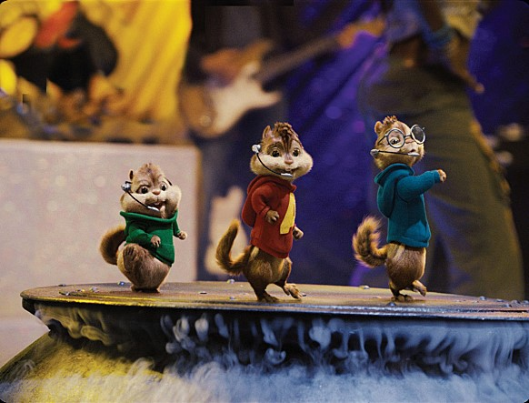
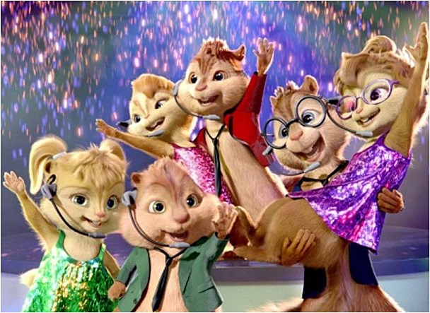
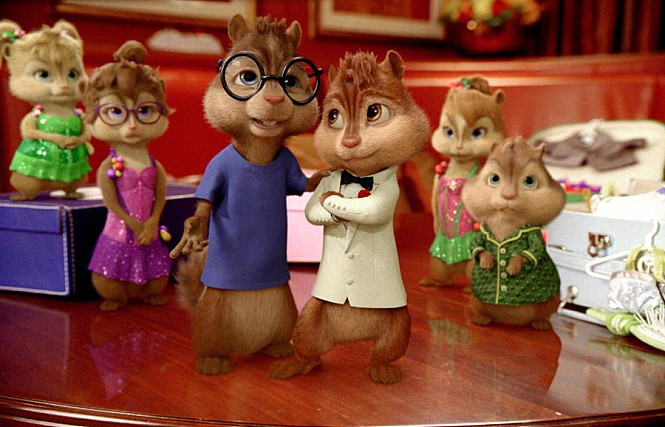

앨빈과 슈퍼밴드에 나온 OST를 알아보자!!
(시즌 당 1곡씩) ▼▼▼▼▼
Witch Doctor
▲▲▲▲ 이미지 누르기(다보고는 현재 창 닫기)
앨빈과 슈퍼밴드 1에서 나온 곡이다.
앨빈과 슈퍼밴드가 톱스타 반열에 오르며 공연하는 장면이다.

We are family
▲▲▲▲ 이미지 누르기 (다보고는 현재 창 닫기)
앨빈과 슈퍼밴드 2에서 나온 엔딩곡으로,
악역과의 갈등을 끝내고 칩멍크와 치페티들이 무사히 공연을 하는 장면이다.

Born this way
▲▲▲▲ 이미지 누르기(다보고는 현재 창 닫기)
앨빈과 슈퍼밴드 3에서 나온 엔딩곡으로,
모험을 끝내고 칩멍크와 치페티들이 공연을 하는 장면이다.

Your my home
▲▲▲▲ 이미지 누르기(다보고는 현재 창 닫기)
앨빈과 슈퍼밴드 4에서 나온 엔딩곡으로,
아빠와의 갈등이 해소되고 감동을 주는 장면이다.
▲▲▲▲위로 가기▲▲▲▲